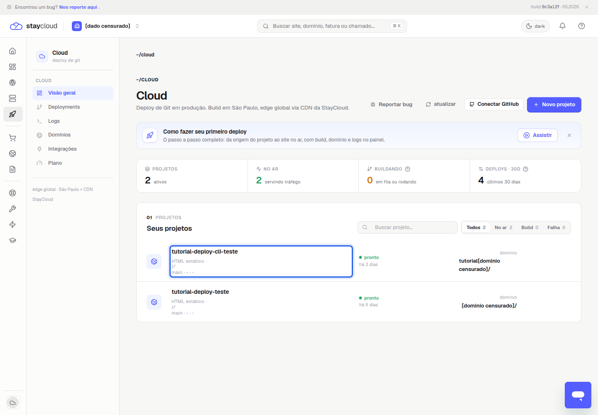
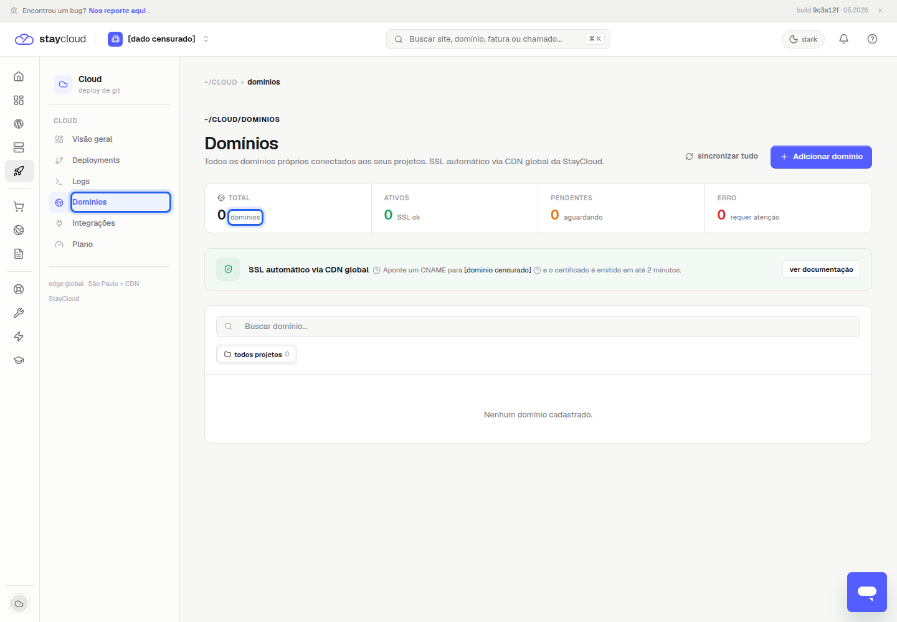
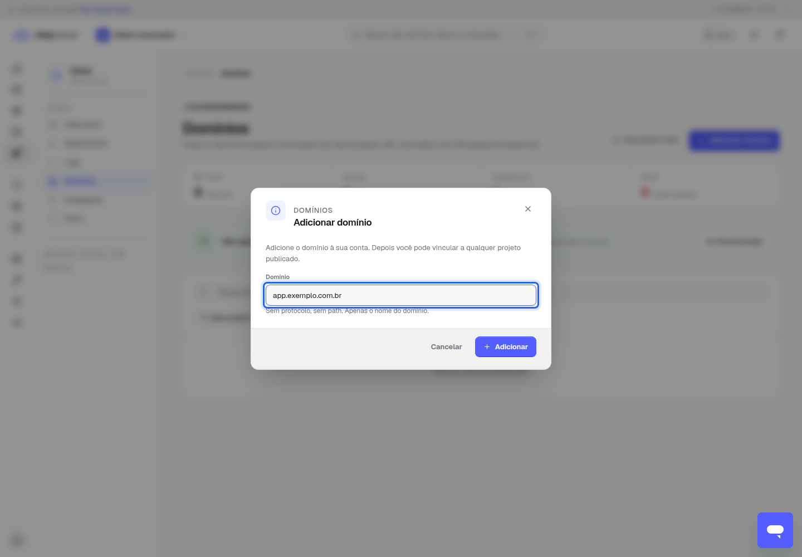
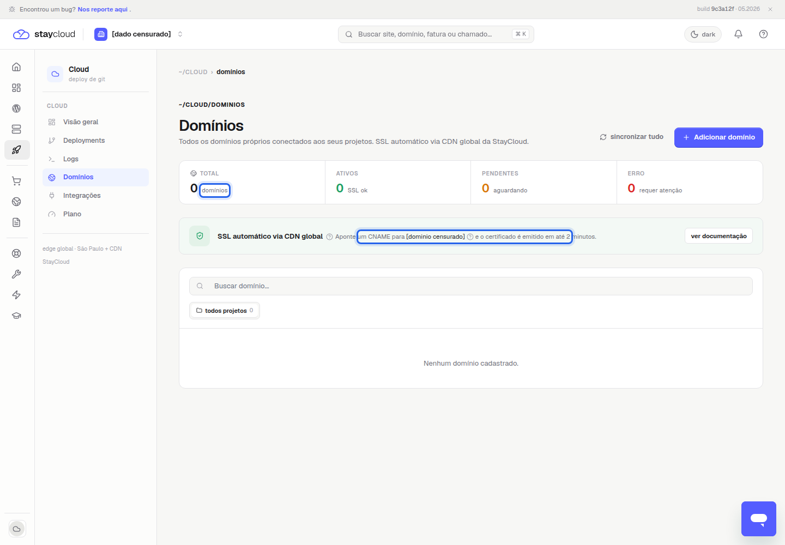
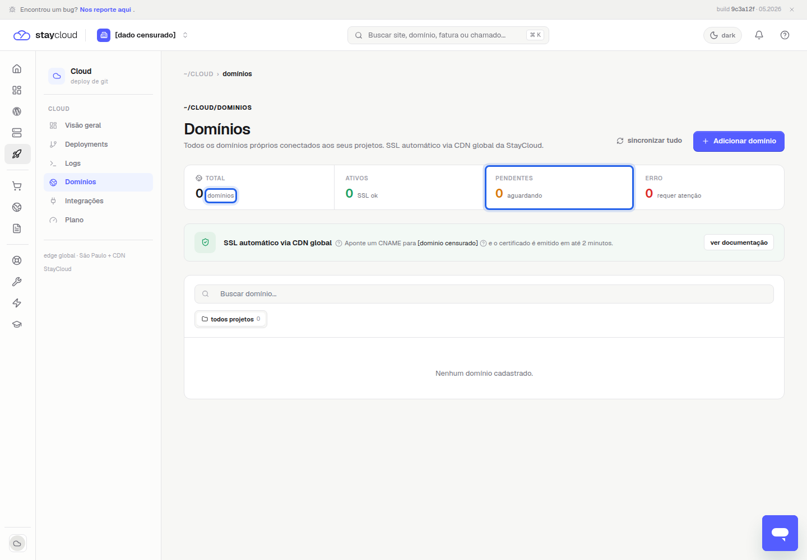

Como configurar um domínio personalizado no Deploy StayCloud
Domínio personalizado Deploy StayCloud é o recurso usado para ligar um endereço próprio, como um domínio ou subdomínio, a uma aplicação publicada pelo Cloud do Painel Novo. Neste tutorial, você vai ver onde fica a área de domínios, como adicionar o endereço, qual registro DNS o painel solicita e o que conferir enquanto a validação aparece como pendente.
Antes de começar, confirme que a aplicação já está publicada. Se ainda estiver criando o primeiro projeto, veja primeiro como fazer o primeiro deploy na StayCloud. Para acompanhar o resultado depois da alteração, consulte também como consultar os logs do Deploy StayCloud e como publicar nova versão pelo Deploy.
O que é um domínio personalizado no Deploy
O domínio personalizado permite que a aplicação deixe de depender apenas do endereço temporário gerado pelo Deploy e passe a responder por um endereço escolhido por você. No painel validado, esse recurso aparece dentro de Cloud, na área Domínios. A tela informa que os domínios próprios podem ser conectados aos projetos publicados e mostra a orientação de apontar um registro CNAME.
Esse fluxo não substitui a compra do domínio nem a gestão completa da zona DNS; ele trata apenas da conexão entre o endereço próprio e a aplicação publicada.
Antes de conectar o domínio personalizado Deploy StayCloud
Use apenas uma aplicação que você reconhece e pode administrar. Tenha acesso ao DNS antes de iniciar, porque a etapa externa será feita no provedor onde a zona está hospedada. Não altere nameservers, registros de e-mail ou registros em uso sem revisar o impacto.
No fluxo validado, nenhum DNS externo foi alterado. O painel mostrou a instrução necessária, mas a configuração real do registro depende de autorização e acesso ao gerenciador DNS do domínio.

Como adicionar um domínio ao Deploy StayCloud
1. Abra a aplicação publicada
No Painel Novo, acesse Deploy e entre em Cloud. Localize a aplicação publicada que receberá o domínio. Se houver mais de um projeto, confira o nome, o status e a URL temporária antes de continuar.
A URL temporária do projeto continua sendo uma referência durante a configuração. Use esse endereço para confirmar que você está conectando a aplicação correta.
2. Acesse a área de domínios
Dentro do Cloud, clique em Domínios. Essa é a área oficial observada no painel para gerenciar os domínios próprios conectados aos projetos. A tela mostra contadores de domínios totais, ativos, pendentes e com erro.

3. Informe o domínio ou subdomínio
Clique em Adicionar domínio. O painel abre um modal com o campo Domínio e a orientação de informar apenas o nome do domínio, sem protocolo e sem path. Portanto, não inclua https://, http:// nem caminhos como /app.
Exemplos de formato correto são app.exemplo.com.br para subdomínio ou exemplo.com.br para domínio raiz. Não use domínio de cliente ou produção sem autorização.

4. Configure o registro DNS solicitado
Na área de Domínios, o painel informa que é necessário apontar um CNAME para o destino exibido pelo Deploy. Esse registro deve ser criado no gerenciador DNS do domínio, não necessariamente dentro da StayCloud. Copie o destino exatamente como exibido e crie apenas o registro relacionado ao endereço que você está conectando.
Se o domínio usa outro provedor de DNS, faça a alteração nesse provedor. Se usa DNS da StayCloud, altere somente o registro necessário. Não troque nameservers nem remova registros de e-mail para cumprir este passo.

5. Aguarde e confira a validação
Depois de salvar o registro DNS no provedor correto, volte à área Domínios e acompanhe o status. A tela validada mostra os grupos ATIVOS, PENDENTES e ERRO. Enquanto o domínio estiver pendente, confira se o CNAME foi criado no host correto.

6. Abra a aplicação pelo novo endereço
Quando o domínio aparecer como ativo, abra o endereço no navegador e confira se ele carrega a aplicação esperada. Se ainda não estiver ativo, não force várias alterações seguidas. Primeiro compare o valor do CNAME no painel com o registro criado no DNS.
Como saber se o domínio foi validado
A validação deve aparecer na própria área Domínios. O painel também apresenta a seção de SSL automático via CDN global. No teste, a emissão final não foi concluída porque nenhum DNS externo foi alterado, então não trate este tutorial como prova de validação de um domínio real.
O que conferir quando o domínio permanece pendente
Confira se o endereço foi digitado sem protocolo, se o CNAME foi criado no DNS correto e se o host usado no registro corresponde ao domínio ou subdomínio informado no painel. Também verifique se já existe registro A, AAAA ou CNAME conflitante para o mesmo host.
Erros comuns
- Informar a URL completa com
https://em vez de apenas o domínio. - Criar o CNAME no provedor DNS errado.
- Alterar nameservers sem necessidade.
- Mexer em registros de e-mail durante a configuração do site.
- Conectar domínio de cliente sem autorização.
Dúvidas frequentes
Preciso remover a URL temporária?
Não foi validada remoção da URL temporária neste fluxo. Use a URL temporária como referência enquanto confirma o domínio próprio.
O painel usa CNAME?
Sim. Na tela validada, a instrução exibida foi apontar um CNAME para o destino informado pelo Deploy.
Posso configurar e-mail nesse mesmo fluxo?
Não. Este tutorial trata apenas do endereço da aplicação no Deploy. E-mail, MX, SPF, DKIM e DMARC devem ser tratados em outro procedimento.
Conclusão
Para configurar um domínio personalizado Deploy StayCloud, abra a aplicação certa no Cloud, acesse Domínios, clique em Adicionar domínio, informe o endereço sem protocolo, crie o CNAME solicitado no DNS autorizado e acompanhe os status da tela. A configuração só deve avançar até a validação final quando você tiver permissão para alterar o DNS do domínio.